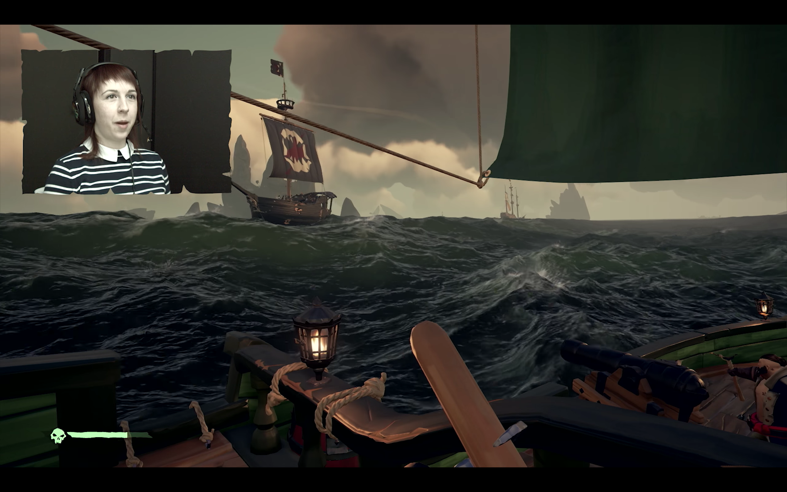
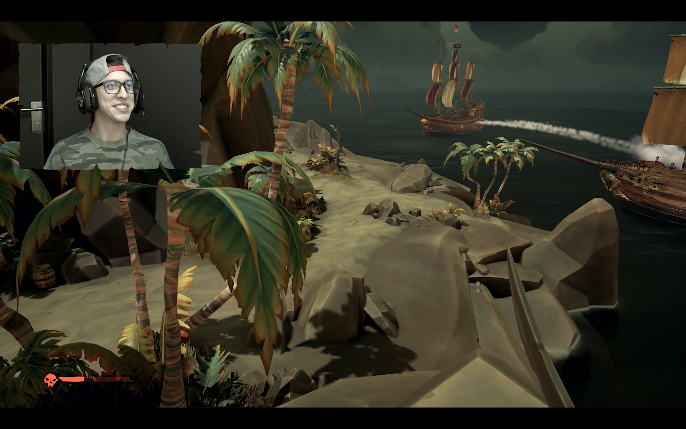
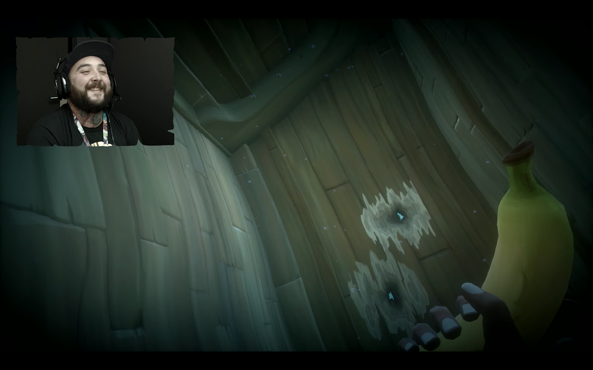
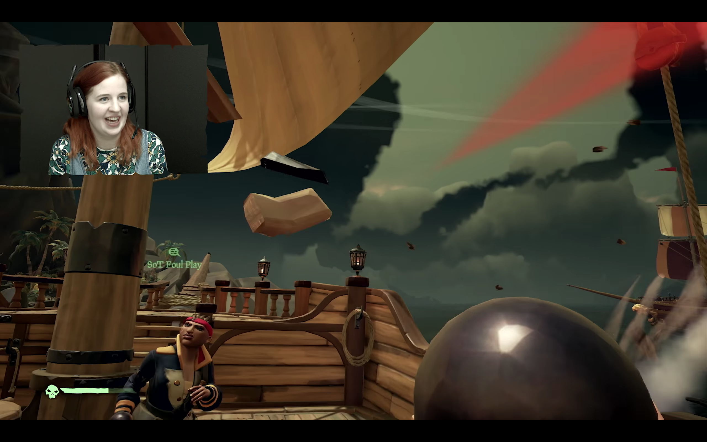

The game is loading. The screen is black and a loading animation is stuttering and rotating. And then suddenly I’m ushered into a world with my feet on the deck of a boat, and I’m standing there spinning with my mouth agape -- and I’m silent and stunned -- when a voice breaks me from my stupor:
“We’ve got another for the crew! New guy, help raise the anchor!”
I turn to look at a large wheel with two people spinning it slowly. They need help, I don’t know how to help, but I walk to the wheel and push a button at random and there I am: I’m helping. I’m part of a crew. That crew -- my crew -- dug up chests, stole a boat, got drunk in taverns and played sea shanties over the course of the next five hours. At first we were strangers, but this is a story of how we became a band of pirates.
The Crew
I’m introduced to the crew by the most chipper among them: Xen, a man from Sweden with a slight accent, who is figuratively drunk from sleep deprivation. It was five in the morning in his time-zone and he was still playing the game, giddy and excitable.
“This is PeaceMaster”, he tells me, his in-game character looking toward a heavy-set pirate standing next to us on the deck. “PeaceMaster is a mute! He doesn’t talk.”
Given that we’re pirates, a lack of a microphone isn’t merely someone without a microphone: they’re a mute.
I reply, “God knows what he did for such a punishment.”
“And this,” Xen says, “is our Captain!” I look to see another pirate, and a name floats over his head that spells: LGDickWeed. I say his name aloud and posit that I’d prefer to call him “Captain”. He chuckles and resumes his position at the helm, steering our ship toward an island far in the distance. I told them that my name was “Nohbody,” a direct reference to Homer’s Odyssey in which the more-or-less titular character Odysseus blinds a cyclops and takes credit under the name “Nohbody.” It’d be remiss for me to say that my pseudonym has never been in a game so fitting for its inspiration.
The Cursed Chest
“We’ve got lots of treasure on board,” the Captain tells me. “We’ve got to cash it all in, but we keep finding more islands and treasures along the way. Another is coming up on our right!”
I see an island in the distance. I want a better view and climb a tall ladder to get into the crow’s nest, the highest point upon the main mast. I see the island as we rapidly approach it. Xen announces that he’s dropping the anchor, and within seconds I spot PeaceMaster, wading through the waves, making a beeline across the beach with a map in their hands. I leap from the crow’s nest with a yell of excitement (and praying that I’ll land in the water.) I make a splash and swim to the surface to catch up to PeaceMaster, and within moments I find them uncovering a chest on the beach. Given that I’ve done little to aide in this discovery, I volunteer to schlep it back to the ship. I’m worried that I’ll sink and drown as I wade into the water with the cargo in my hands, but I manage to swim the distance the ship and climb the rope ladder to get on board. When I ask where to deposit the chest, our Captain says to drop it in his quarters. When I step inside the cabin, dripping with water, chest in hand, eyes aglow from having partaken in my first -- albeit brief -- treasure hunt, I’m startled to see ten chests sprawled across the floor.
“I told you we had lots of treasure!” the Captain says. “Oh! PeaceMaster just found another chest, and this one wasn’t even marked on the map!”
“I found one too!” Xen exclaims.
What PeaceMaster may lack in conversation, they certainly make up for in treasure hunting.
“Bring the chests onto the boat, and hurry!” our Captain proclaims. I exit the cabin and stand on the deck to watch them approach, each of them laden with treasure. The Captain climbs aboard and is holding PeaceMaster’s recent discovery: a dark burgundy chest ornamented with a face stricken with misery.
“When I picked it up, a name flashed across my screen: The Chest of Sorrows,” the Captain remarks. The face on the chest has come to life: it’s literally crying and shedding tears.
“I’ve never seen a chest like this before,” the Captain tells us, dropping it in the cabin.
“Neither have I,” says Xen. “It’s bound to have plenty of gold in it!”
I see the chest and feel a bad feeling growing in my gut. “I don’t like the look of this chest,” I say. “I think it’s foreshadowing. We’ve got to turn these things in, and soon.”
We raise the anchor and depart, excited but nervous. The Captain lets me take the helm and goes to the lower deck to study the map.
“I hear leaking!” he shouts. “There’s water all the way up to the second floor! Get the buckets! We’re sinking! We’re sinking! Get the buckets!”
A feeling of dread overtakes me when I think about the treasure we’re bound to lose. So much treasure, so much hope, and now it’s all about to be dashed to the bottom of the sea. We manage to frantically bucket all of the water out of the ship, but we can’t find the leak. We’re running all over the ship to discover the source, but none can be found.
“It’s the chest! The Chest of Sorrows! The tears are flooding the ship!” Xen shouts. I run over to the chest and hear the leaking sound coming from the chest itself. He picks up the chest and stands on the edge of the deck, contemplating dropping it into the water. “It’s stopped crying.” he says, walking it back toward the cabin. We all release sighs of relief.

The Celebration
We finally make it to a settlement and exchange our chests for gold. We share the bounty and make like bandits, each of us rich enough to buy new musical instruments and weapons.
“Let’s hit the tavern to celebrate, boys!” the Captain shouts. We saunter on over to the tavern (which is sadly empty of other players) and fill our mugs with grog.
“We did it! Let’s get drunk! We’re rich! Hey-Ho!”
Drinking virtually didn’t seem celebratory enough. And so, I began to work on a rather large bottle of alcohol. It’s not grog, in fact it’s probably close to the polar opposite: red wine. Regardless, it hit the spot. Alternating between taking swigs on-screen and off, I reveled in the excitement of my crew. We jumped onto a table and danced (there’s no dancing animations yet but we did our best), chugged from our mugs, and played our musical instruments. As is to be expected, the more your character drinks, the more you stumble and sway when walking, and the more blurry your screen becomes. The best part about being drunk? Playing instruments. Your musicianship goes downhill dramatically. We were dancing and cheering and making a cacophony with our instruments when our Captain begins to shout:
“I’m going to be sick! I’ve drank so much! Watch out!”
Neon-green vomit sprays onto my screen as I hear retching from our in-game characters. We’re all vomiting and spewing fluids across the tavern, onto the tables, the counter, the chairs, the floor, the walls, everywhere.
Lousy Parking
When we finished vomiting we cleared out of the tavern. I don’t imagine we tipped very well. We make our way back toward the boat and a few of us stumble off the docks and tumble into the water before climbing onto the rope ladder. (Luckily pirates are good swimmers, even while drunk.) We get onboard and make preparations to depart. Except we can’t. Why? Our boat is stuck. It’s stuck between the docks.
“Captain!” Xen exclaims, “We can’t get the boat to sea! We’re wedged between the two docks!”
I tell Xen to put the boat in reverse, not aware of the fact that moving a boat without a motor backwards isn’t exactly trivial.
“I can’t! This thing doesn’t have a motor!”
And thus, we spent thirty minutes of slamming and squeezing and attempting desperately to wiggle the ship free. The virtual sun fell and rose. Our Captain threatened to quit the game. PeaceMaster was in the water in a futile attempt to push the boat to sea.
“Another ship! On the other side of the island!” Xen screams.
We jump off our boat and I’m running with my pistol out, screaming at the top of my lungs, “Let’s steal their boat! Let’s go! Let’s go!”
We confront the other crew members with jeers and bullets and blades, slaying them before sprinting down the docks to their ship. Their ship was parked quite well. We lower the sails, our Captain mans the helm, and we find ourselves yet again sailing the seas. It lasted for all but a moment. The enemy crew members began to respawn on the ship. We met them with ferocity, but their repeated efforts (they had infinite lives, after all) claimed ours. We found ourselves back on the decks of our incapacitated boat, our happiness as low as our hopes had been high just moments before.
It took another half-hour of thrashing our ship back and forth against the docks before we tasted liberty again. We set off, excited but exhausted by the ordeal, and found ourselves exploring islands, shooting each other out of cannons, and solving riddles to find treasure. We had numerous ship battles and more victories than losses. One battle found us in a deadlock with an enemy ship. Our ships would come to pass each other and would release a barrage of shots before looping back around for another run, only for each ship to repair their damages, and thus an endless cycle began. After several passes like this, our Captain, in a moment of inspiration and frustration yells to drop the anchor as we approach for another pass. We throw down the anchor, and LGDickWeed (should you have forgotten our Captain’s name) slams the wheel to the far left and as the enemy ship comes across our bow we curl around it for another unexpected pass, releasing a relentless array of cannonballs. We crippled their ship and follow them hastily, releasing shots as they retreat only to watch them retreat eternally into the depths. Victory at last! Sadly, however, the taste of victory was made bitter by our realization that we could not -- or knew not how -- to loot their ship.

In Conclusion
My time spent playing Rare’s Sea of Thieves was glorious. Learning to sail the ship was challenging yet intuitive. Solving riddles for treasure was calming yet satisfying. Sea battles were exhilarating, especially when paired with some sort of naval strategy. Taken at face value, the list of things to do in-game are small. Sail, find treasure, and fight on foot or at sea. Rinse and repeat. (The rinsing part is literal: death feels like your soul is rinsed by the ghosts of the ocean.) However, if do this game-loop with comrades-in-arms you’ll find that there’s so much room for improvisation and hilarity that you’ll wonder why an open-world pirate game is only now gracing us with its presence. Sea of Thieves is already a special game, and given how receptive Rare has been to the community’s involvement in its direction and enhancement, I can think of no other game I look forward to most in 2018.